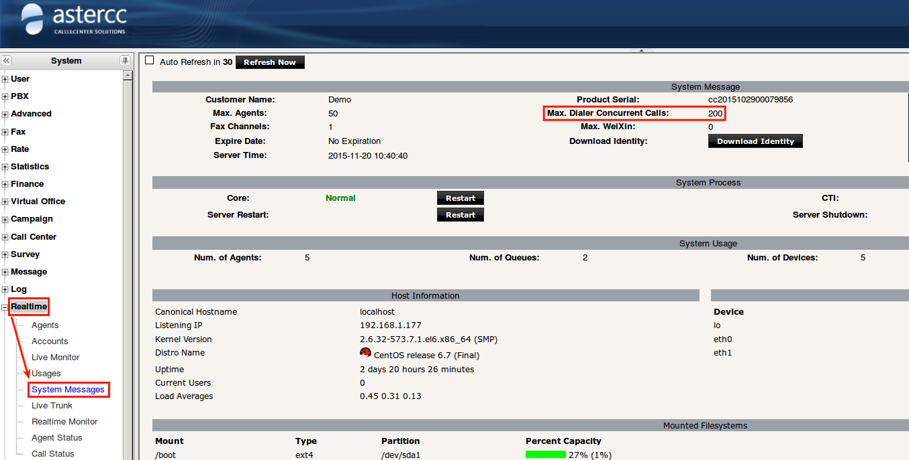
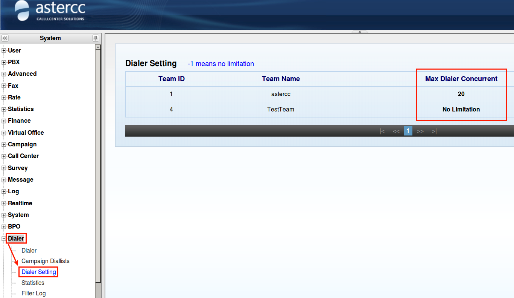
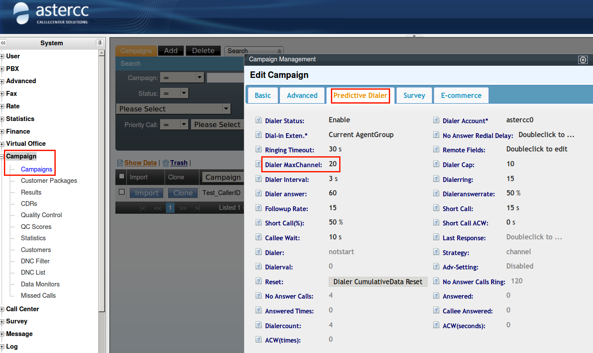
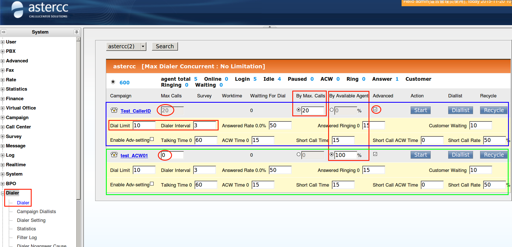
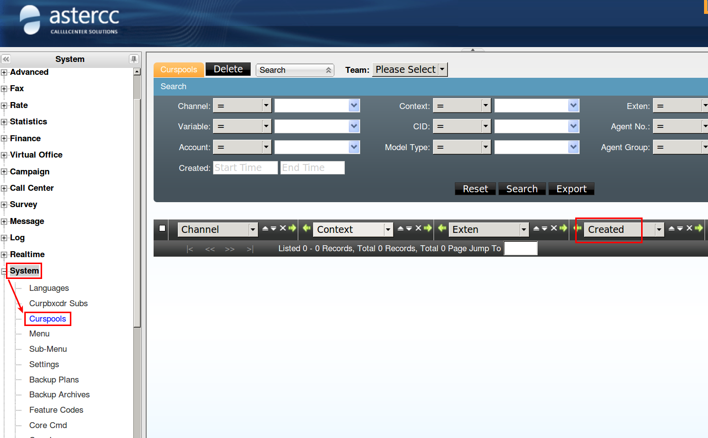
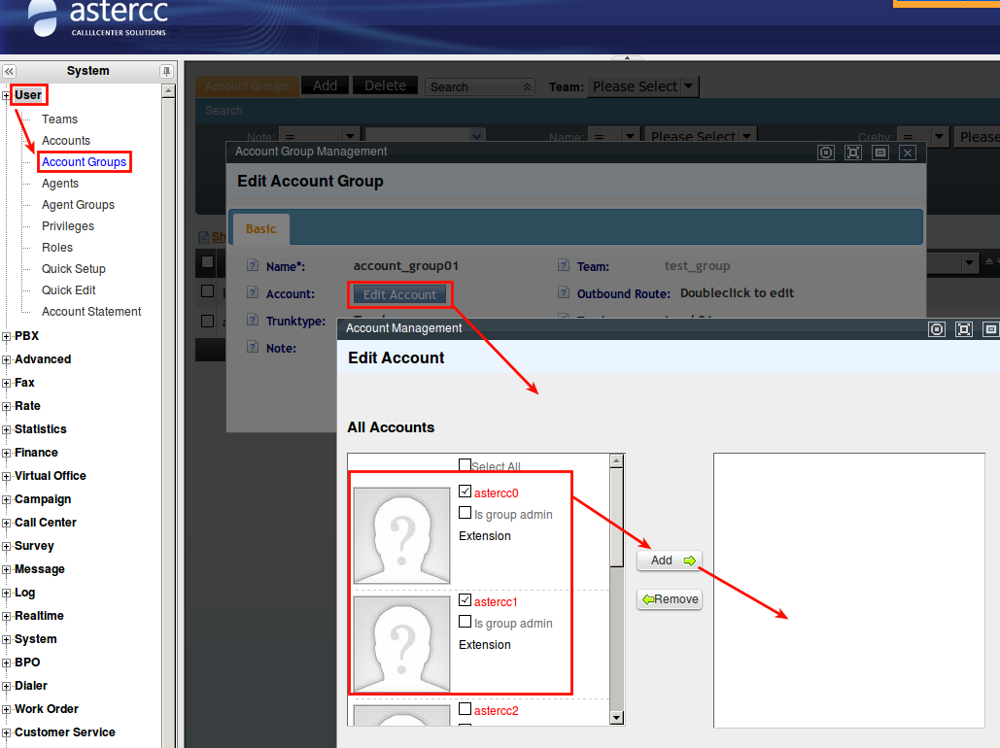
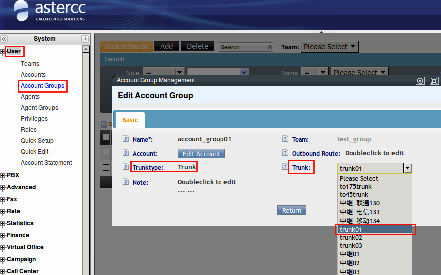
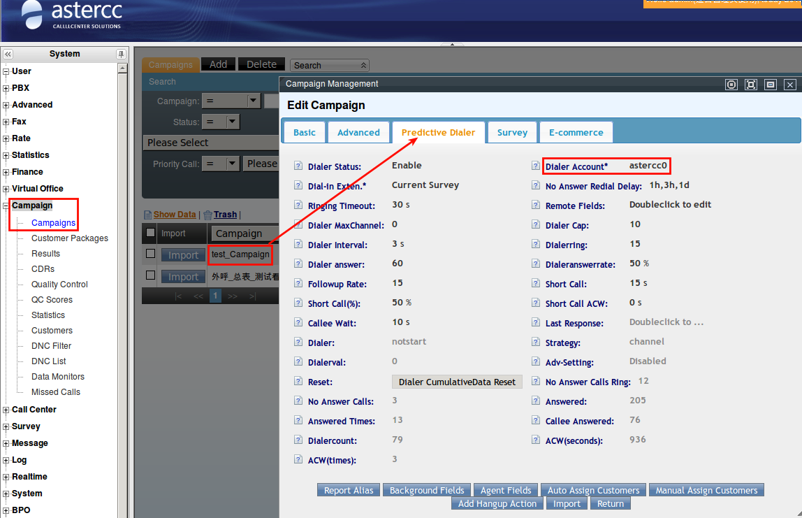

FAQ: Marcador y campañas outbound¶
Métodos y parámetros de marcación¶
¿Qué diferencia hay entre los métodos de marcado disponibles en una tarea de campaña?¶
AsterCC ofrece cinco métodos de marcado, cada uno pensado para un escenario distinto:
| Método | Cómo funciona | Cuándo usarlo |
|---|---|---|
| Marcado directo (teléfono) | El agente marca con su propio teléfono | Empresas sin necesidad de automatización |
| Clic para llamar | El agente hace clic en el botón junto al número | Tareas donde el agente necesita revisar el perfil del cliente antes de llamar |
| Marcado en vista previa | Al abrir la ficha del cliente, el sistema marca automáticamente | Tareas donde el agente quiere controlar el ritmo de la llamada |
| Marcado automático | El agente pulsa un botón y el sistema abre y marca clientes en orden | Tareas dirigidas con alta tasa de contestación (ej. seguimiento de clientes) |
| Predictivo (pre-dial) | El sistema marca por adelantado según una política de marcado, a nivel de grupo de agentes | Tareas con baja tasa de contestación y muchos agentes (equipos grandes) |
¿Qué parámetros limitan la cantidad de llamadas simultáneas del marcador predictivo?¶
El límite efectivo de concurrencia surge de varias capas, evaluadas de la más amplia a la más específica:
- Troncal (proveedor): el proveedor impone un tope de líneas simultáneas — conviene confirmarlo antes de ajustar cualquier otro parámetro.
- Sistema: en Información en tiempo real → Información del sistema se ve el máximo de concurrencia predictiva permitido para todo el sistema.

- Equipo: en Predictivo → Configuración del marcador se define el máximo de líneas concurrentes por equipo (todas sus tareas combinadas);
-1significa sin límite. Si un troncal está dedicado a un solo equipo, este es el lugar para reflejar el tope real del proveedor.

- Tarea de campaña: en la configuración avanzada de predictivo de cada tarea, el campo de canales máximos actúa como el "máximo de llamadas" de la configuración avanzada del marcador;
0significa sin límite.

- Configuración avanzada del marcador: aquí se define el modo de cálculo:
- Por máximo de llamadas: si el valor configurado excede el "máximo de llamadas" de la tarea, se reduce automáticamente a ese tope.
- Por porcentaje de agentes disponibles: concurrencia = (agentes con check-in × porcentaje) / tasa de contestación, sin superar nunca el "máximo de llamadas".
- También se configuran ahí el límite de marcado por ciclo (cuántos números se marcan a la vez) y el intervalo de marcado (cada cuántos segundos se marca).

Si tras ajustar todo lo anterior la concurrencia real sigue siendo baja, revisa los datos de marcado con error (Curspools/cola de errores del marcador): registros muy antiguos (creados hace más de media hora, horas o días) son datos "atascados" que conviene eliminar — algunos ocupan un canal de concurrencia real aunque duren solo 1-2 segundos y no lleguen a mostrarse en el panel.

Troncales para salida¶
¿Cómo elijo qué troncal usa cada usuario al marcar hacia afuera (no solo en campañas)?¶
Esta configuración aplica a cualquier llamada saliente, no solo a las de campaña, y se define a nivel de reglas de troncal:
- Agrupa los troncales que quieras usar en un grupo de troncales — ver Marcador y campañas para el concepto de troncal/grupo de troncales.
- Define reglas del grupo de troncales por prefijo o longitud del número marcado: cuando el número de salida coincide con la regla, el sistema elige automáticamente ese troncal. Las reglas también pueden modificar el número que llama (ej. agregar código de área a números locales, o anteponer 0 a móviles entrantes).
- Aplica la regla a todo un equipo (seleccionando el grupo de troncales en la gestión de equipos), o solo a usuarios específicos (creando un grupo de cuentas y asignándoles el grupo de troncales — útil, por ejemplo, para que solo mandos medios/altos puedan marcar larga distancia internacional). El agente siempre usa la regla de la cuenta a la que pertenece.
¿Cómo asigno un troncal específico a una tarea de campaña puntual?¶
Cuando la regla general de troncales no basta y se necesita fijar el troncal de una campaña en particular:
- Si el equipo tiene un único troncal (no un grupo): toda tarea de campaña de ese equipo usa ese troncal directamente — se configura en la gestión de equipos.
- Si el equipo tiene varios troncales y solo una tarea puntual debe usar uno distinto: agrega las cuentas de los agentes de esa tarea a un grupo de cuentas, y asigna a ese grupo de cuentas el troncal (o grupo de troncales) deseado. Por ejemplo, si los agentes 01 y 02 deben marcar por el troncal 01 dentro de un equipo que tiene un grupo de troncales con tres troncales, se agregan sus cuentas a un grupo de cuentas y se le asigna el troncal 01 a ese grupo.


- Si la tarea usa marcado predictivo: el troncal se determina indicando qué cuenta del grupo de cuentas se usa para el predictivo (ej. la cuenta ya asociada al troncal deseado) — no se selecciona el troncal directamente en la tarea.

Registro de llamadas y grabaciones¶
¿Cómo hago que el sistema registre una llamada saliente hecha directamente desde la extensión de un agente?¶
Por defecto, si un agente marca directo desde su extensión (sin pasar por la interfaz web), el sistema no sabe para qué aplicación/tarea está llamando y no genera un registro de llamada asociado a ninguna. Para solucionarlo:
- PBX → Gestión de extensiones: en los datos avanzados de la extensión del agente, cambia Modo de agente a "Disponible".
- Cuentas y permisos → Gestión de agentes: en los datos básicos del agente, asígnale un grupo de agentes de salida actual.
- Cuentas y permisos → Gestión de grupos de agentes: en ese grupo, define el tipo de aplicación de salida actual — esto determina qué aplicación se usa para el registro de la llamada y qué pantalla de gestión se muestra automáticamente al agente.
Con esta configuración, cuando el agente marca directo desde su extensión, el sistema asocia la llamada al grupo de salida configurado y muestra la pantalla de la aplicación correspondiente.
Warning
Para que el registro se genere, el agente debe estar libre (no en llamada) y no en estado de posprocesamiento (wrap-up) — mientras está en posprocesamiento, el sistema asume que está gestionando la llamada anterior y no registra la nueva.
Un cliente en la tarea de campaña muestra grabaciones de llamada que no se pueden escuchar — ¿por qué?¶
Síntoma típico tras un corte de energía o reinicio inesperado del servidor: las grabaciones de los últimos días parecen no estar disponibles desde el registro de llamadas de la tarea. La causa habitual es que los registros de los dos días más recientes todavía viven en la tabla diaria de CDR de PBX — el paso a la tabla mensual ocurre automáticamente durante la madrugada. Dos soluciones:
- Esperar: al día siguiente, el traspaso nocturno mueve el registro a la tabla del mes y la grabación vuelve a reproducirse con normalidad desde la tarea de campaña.
- Forzar el traspaso antes de tiempo: en Configuración del sistema → Configuración del sistema → Procesamiento de big data, ajusta el tiempo de retención de la tabla
pbxcdractual a un valor próximo (ej. el minuto siguiente) para que el traspaso a la tabla mensual ocurra de inmediato.
Gestión de clientes en campaña¶
¿Cómo se vincula la creación de una orden de trabajo (work order) desde la pantalla emergente de una tarea de campaña?¶
El concepto general de work order está documentado en Base de conocimiento y Work Orders. Desde el lado de campañas, la vinculación se hace en Marketing de salida → Gestión de resultados de llamada:
- Cada resultado de llamada (la frase que resume la llamada — ej. "no contesta", "no le interesa", "número equivocado") se asocia a un estado de gestión del cliente (todos / sin procesar / seguimiento / envío exitoso / envío fallido) y opcionalmente a un equipo o una tarea de campaña específica, para acotar en qué contexto aparece.
- El campo Orden de trabajo de cada resultado de llamada determina si, al seleccionar ese resultado, el sistema permite crear una orden de trabajo para el cliente directamente desde la pantalla emergente. Este campo no se puede modificar después de creado el resultado.
- Requisito: la opción de crear orden de trabajo desde la pantalla emergente solo aparece si la tarea de campaña usa el listado maestro de clientes (tabla general), no un paquete de clientes normal.
Necesito reasignar manualmente un cliente del listado maestro a otro agente y el sistema no lo encuentra — ¿qué hago?¶
Puede pasar que, si el navegador de un agente se cerró de forma anormal mientras tenía abierto ese cliente, el registro quede marcado como "bloqueado" (locked) en la base de datos y no aparezca disponible para reasignación manual desde el listado maestro — aunque sí se puede ubicar buscándolo dentro de la gestión de clientes de la propia tarea de campaña.
Para liberarlo manualmente:
- Identifica el paquete de clientes de la tarea (en Gestión de paquetes de clientes) — la tabla MySQL correspondiente sigue el patrón
cc10_x_individualpackages. - En esa tabla, ubica el registro por su
idy revisa el campolocked. Si tiene un valor de fecha/hora (ej.2016-10-12 15:33:20), el cliente sigue marcado como en uso. - Cambia ese valor a
0000-00-00 00:00:00para liberarlo, y repite la reasignación desde la interfaz.
Warning
Esta es una edición directa en base de datos — hazla con respaldo reciente y fuera de horas de operación si es posible.
¿Cómo puede un agente marcar y registrar resultados usando solo el teclado del teléfono, sin la interfaz web?¶
Pensado para cuando el agente no puede usar el navegador. Requiere configuración previa:
- El agente debe hacer check-in en su grupo de agentes (cola) — el detalle de check-in por teclado se documenta en los casos de uso de marcación con teclado del teléfono.
- Se le debe asignar un grupo de agentes de check-in por defecto, y ese grupo debe tener vinculada una tarea de campaña por defecto.
- La tarea de campaña vinculada no puede usar el listado maestro de clientes — debe ser un paquete de clientes normal.
Obtener un cliente y marcar: con el teléfono en mano, el agente pulsa *0. El sistema elige el cliente a marcar según esta prioridad (de mayor a menor):
- Clientes en seguimiento con cita en los próximos 5 minutos.
- Clientes en seguimiento con cita ya vencida.
- Clientes sin procesar asignados al agente.
- Clientes sin procesar sin asignar.
Entre clientes del mismo nivel, tiene prioridad el que se ha marcado menos veces.
Registrar el resultado: al finalizar la llamada (o si el cliente cuelga primero), el agente escucha un mensaje pidiendo que ingrese el estado del cliente, y marca 2 dígitos:
- 1er dígito = estado de gestión:
1sin procesar,2seguimiento,3envío exitoso,4envío fallido. - 2º dígito = posición del resultado de llamada asociado a ese estado, según el orden en que aparecen listados en Marketing de salida → Gestión de resultados de llamada.
Ejemplo: 41 = envío fallido + primer resultado de esa categoría (ej. "en lista de exclusión"); 22 = seguimiento + segundo resultado de esa categoría (ej. "apagado").
Warning
Esta función no admite marcar resultados de llamada agregados después de la configuración inicial — solo reconoce los que existían al momento de habilitarla.
Fuentes¶
raw/zh/常见问题及解答/外呼任务中拨号方式的区别和选择.txtraw/en/faq/how_to_choose_dial_method_in_campaign.txtraw/zh/常见问题及解答/影响预拨号并发数的参数设置.txtraw/en/faq/how_to_control_concurrent_calls_in_predictive_dialer.txtraw/zh/常见问题及解答/手动外拨生成呼叫记录设置方法.txtraw/zh/常见问题及解答/如何设置外呼时用户使用的中继.txtraw/en/faq/how_to_use_a_specific_trunk_for_outbound_calls.txtraw/zh/常见问题及解答/如何给外呼营销任务指定中继进行外呼.txtraw/en/faq/how_to_assign_the_trunk_to_a_campaign.txtraw/zh/常见问题及解答/外呼营销任务弹屏资料页上绑定工单功能.txtraw/zh/常见问题及解答/用户外呼营销任务里有通话记录录音听不了.txtraw/zh/常见问题及解答/使用客户总表出现想把一个客户手动分配解决办法.txtraw/zh/常见问题及解答/如何使用话机快捷键获取客户进行外拨并保存呼叫状态和结果.txt